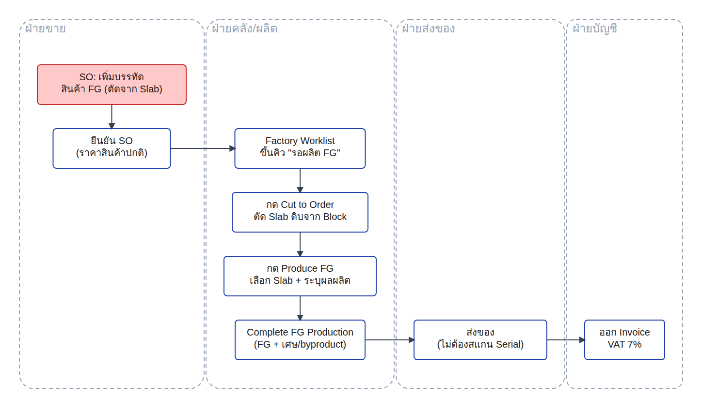
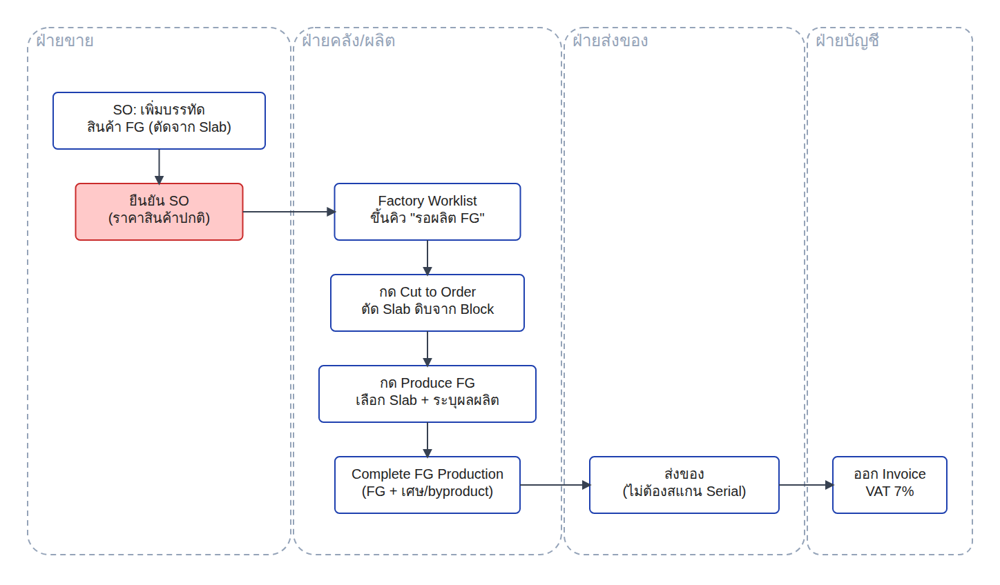
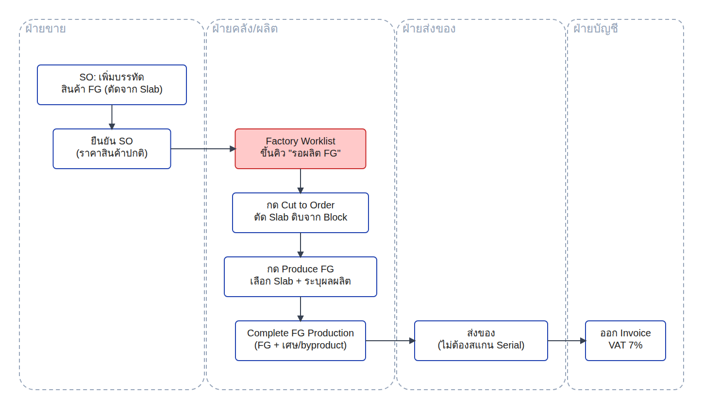
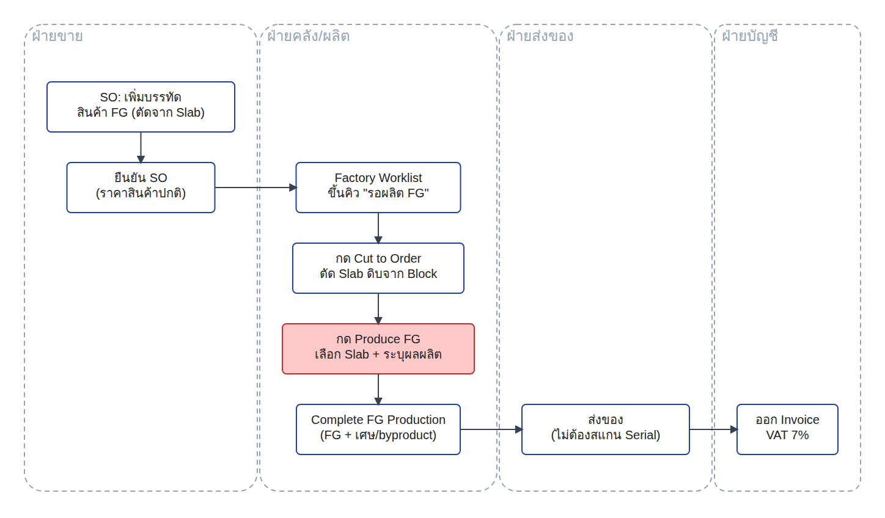
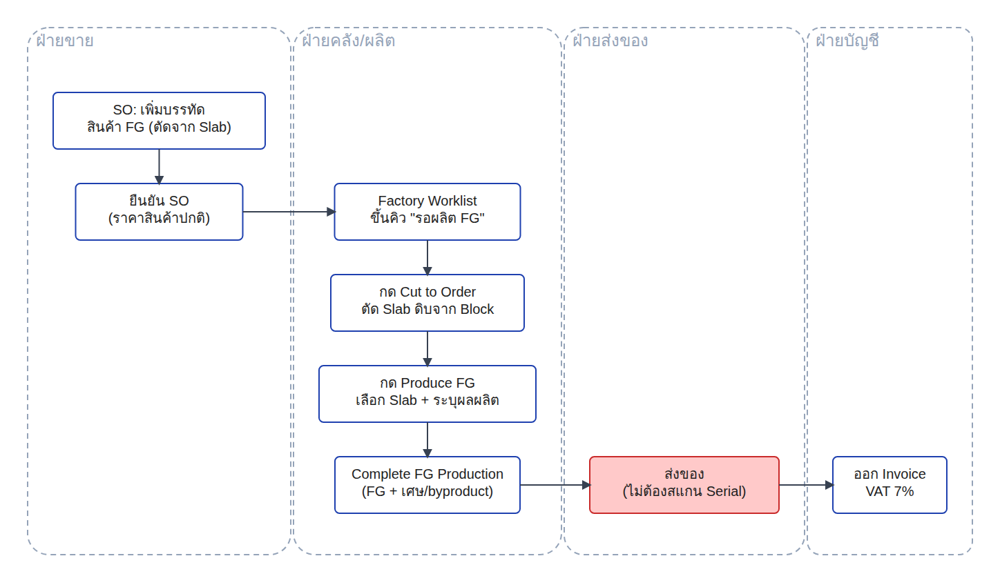
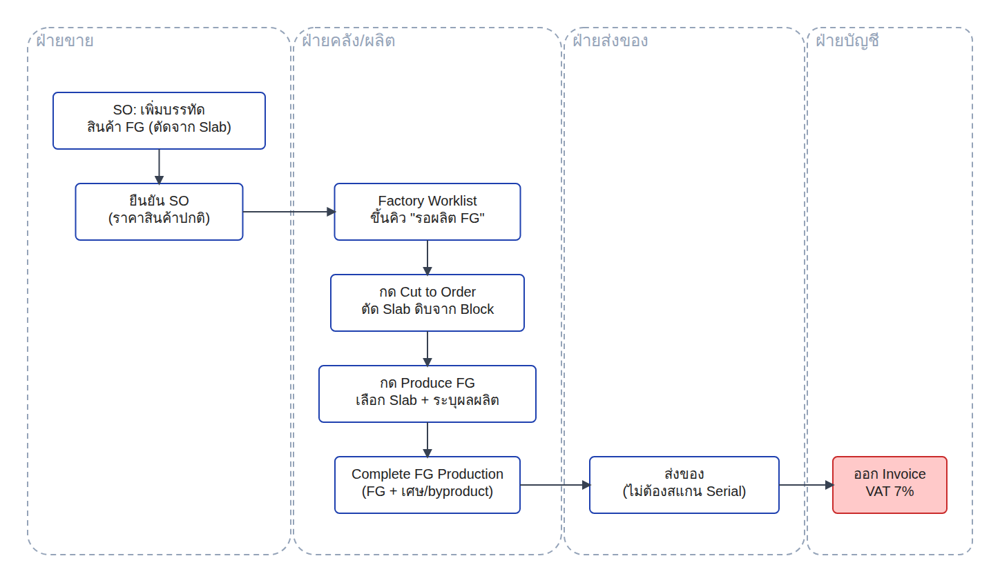

แผนผังขั้นตอน
Flow โหมด 5 ทั้งหมด — 4 ฝ่าย 8 ขั้นตอน

เริ่มนับจากมี Block พร้อมอยู่แล้วในสต็อก — โครงสร้างคล้ายกับโหมด 3 (ยืนยันใบสั่งขายก่อน แล้วส่งต่อฝ่ายผลิตผ่านคิวงาน) แต่มีขั้นตอนเพิ่มอีกชั้นหนึ่ง คือตัดแผ่นหินดิบก่อน แล้วจึงนำแผ่นนั้นไปผลิตเป็นสินค้าสำเร็จรูปอีกที สไลด์ถัดไปจะอธิบายทีละขั้นตอนตามผังนี้ โดยไฮไลท์สีแดงในตำแหน่งที่กำลังอธิบายทุกครั้ง
ขั้นตอนที่ 1 / 8 · ฝ่ายขาย
เปิดใบสั่งขาย → เพิ่มบรรทัดสินค้าสำเร็จรูป (FG)

- ข้อมูลนำเข้า: คำสั่งซื้อจากลูกค้า ต้องการสินค้า Nero Marquina - Kitchen Countertop 60x60cm จำนวน 2 ชิ้น
- กระบวนการ: ฝ่ายขายเปิดใบสั่งขาย แล้วเลือกสินค้าสำเร็จรูปในบรรทัดสินค้า สินค้านี้ตั้งค่าไว้ล่วงหน้าแล้วว่าเป็นสินค้าสำเร็จรูปจากหิน ระบบผูกกับวัตถุดิบ Nero Marquina ให้อัตโนมัติ

ผลลัพธ์: เลือกสินค้า Nero Marquina - Kitchen Countertop 60x60cm จำนวน 2 ชิ้น เข้าบรรทัดใบสั่งขายเรียบร้อย
สินค้าสำเร็จรูปมีราคาขายตายตัวแบบสินค้าทั่วไป (7,200 บาทต่อชิ้น) — ไม่ได้คำนวณจากขนาดตารางเมตรเหมือนแผ่นหินดิบในโหมด 2-3
ขั้นตอนที่ 2 / 8 · ฝ่ายขาย
ยืนยันใบสั่งขาย — ราคาชัดเจนตั้งแต่ต้น ไม่ต้องรอตัด

- ข้อมูลนำเข้า: ใบสั่งขายที่เพิ่มบรรทัดสินค้าสำเร็จรูปเรียบร้อยแล้วจากขั้นตอนก่อนหน้า
- กระบวนการ: ฝ่ายขายกดยืนยันใบสั่งขาย ระบบแสดงปุ่มสำหรับส่งต่อฝ่ายผลิตขึ้นทันทีบนบรรทัดเดียวกัน

ผลลัพธ์: S108408 ยืนยันแล้ว ยอด 14,400 บาท (ก่อน VAT) ปุ่ม "Cut to Order" และ "Produce FG" ปรากฏขึ้นคู่กันบนบรรทัดเดียวกัน พร้อมส่งต่อฝ่ายผลิต
ต่างจากโหมด 3 ตรงที่ราคาที่ยืนยันคือราคาจริงทันที ไม่ใช่ราคาตั้งต้นชั่วคราว — เพราะสินค้าสำเร็จรูปมีราคาต่อชิ้นคงที่ ไม่ต้องรอคำนวณใหม่จากขนาดที่ตัดได้เหมือนแผ่นหินดิบ
ขั้นตอนที่ 3 / 8 · ฝ่ายคลัง/ผลิต
คิวงานฝ่ายผลิต — หน้าเดียวใช้ได้ทั้งตัดแผ่นและผลิตสินค้าสำเร็จรูป

- ข้อมูลนำเข้า: ใบสั่งขาย S108408 ที่ยืนยันแล้วจากฝ่ายขาย
- กระบวนการ: ระบบส่งงานเข้าคิวของฝ่ายผลิตให้อัตโนมัติทันทีที่ยืนยันใบสั่งขาย ไม่ต้องมีใครแจ้งต่อ

ผลลัพธ์: S108408 ขึ้นคิวงานพร้อมป้าย "รอผลิต FG (Cut to Order / Produce FG)" มีปุ่มให้ดำเนินการได้ทั้ง 2 ขั้นตอนจากหน้านี้หน้าเดียว
หน้าคิวงานฝ่ายผลิตหน้าเดียวรองรับทุกโหมดที่ต้องผ่านฝ่ายผลิต (โหมด 3 และ 5) — ฝ่ายผลิตไม่ต้องจำว่าแต่ละโหมดต้องเปิดหน้าไหน ดูคิวงานที่นี่ที่เดียวพอ
ขั้นตอนที่ 4 / 8 · ฝ่ายคลัง/ผลิต
ยังไม่มีแผ่นหินในสต็อก — ตัดแผ่นดิบก่อนด้วยขั้นตอน Cut to Order
เลือกก้อนหิน + ระบุขนาด Slab ที่จะตัด

Slab ดิบตัดเสร็จ พร้อมใช้เป็นวัตถุดิบ

ขั้นตอนนี้เหมือนกับโหมด 3 ทุกประการ (ใช้ขั้นตอนตัดแผ่นแบบเดียวกัน) — ต่างกันตรงที่แผ่นที่ได้ยังไม่ใช่สินค้าขาย แต่เป็นวัตถุดิบที่รอเข้ากระบวนการผลิตสินค้าสำเร็จรูปต่อ (เลือกก้อน BDL-00017 ระบุขนาด 2.40×1.20 เมตร ให้เพียงพอสำหรับตัดได้หลายชิ้น)
ขั้นตอนที่ 5 / 8 · ฝ่ายคลัง/ผลิต
กด "Produce FG" — เลือก Slab และระบุผลผลิตทุกชิ้นที่ตัดได้จริง

- ข้อมูลนำเข้า: แผ่นหินดิบที่เพิ่งตัดเสร็จจากขั้นตอนก่อนหน้า (BDL-00017 #1)
- กระบวนการ: ฝ่ายผลิตกด "Produce FG" ระบบจับคู่แผ่นหินที่เพิ่งตัดให้อัตโนมัติ จากนั้นระบุผลผลิตทุกชิ้นที่ตัดได้จริงจากแผ่นเดียวกัน รวมถึงเศษที่ยังขายเป็นสินค้าอื่นได้

ผลลัพธ์: ระบบจับคู่ Slab ที่เพิ่งตัดให้อัตโนมัติ (BDL-00017 #1) เพิ่มบรรทัดผลผลิต "Bathroom Vanity Top" เป็นเศษที่ตัดพ่วงได้จากแผ่นเดียวกัน
จุดสำคัญของขั้นตอนนี้: 1 แผ่นตัดออกมาได้กี่ชิ้น เป็นสินค้าอะไรบ้าง ตัดสินใจได้หน้างานตอนผลิตจริง ไม่ใช่สูตรตายตัว ระบบรองรับให้เพิ่มบรรทัดผลผลิตได้อิสระ ตราบใดที่มีอย่างน้อย 1 บรรทัดตรงกับสินค้าที่ขายจริงในใบสั่งขาย
ขั้นตอนที่ 6 / 8 · ฝ่ายคลัง/ผลิต
กด "Complete FG Production" — ได้ทั้งสินค้าหลักและเศษที่ขายได้จริง
คำสั่งผลิตเสร็จสิ้น

1 แผ่น → 2 ผลผลิตเข้าสต็อกจริง

จาก Slab เดียว (BDL-00017-1) ระบบสร้างสต็อกจริงออกมา 2 รายการพร้อมกัน — Kitchen Countertop 2 ชิ้น (สินค้าที่ขาย) และ Bathroom Vanity Top 1 ชิ้น (เศษที่ยังขายเป็นสินค้าอื่นได้จริง) แต่ละชิ้นมีเลข Lot กำกับของตัวเอง ตรวจสอบย้อนกลับได้ครบทุกชิ้น
ขั้นตอนที่ 7 / 8 · ฝ่ายส่งของ
ส่งของ — ไม่ต้องสแกนหมายเลข Serial เหมือนโหมด 2-3

- ข้อมูลนำเข้า: สินค้าสำเร็จรูปที่ผลิตเสร็จแล้ว พร้อมส่งให้ลูกค้าตามใบสั่งขาย
- กระบวนการ: ฝ่ายส่งของกด "Validate" เพื่อยืนยันการส่งของ ระบบไม่เรียกร้องให้สแกนหมายเลข Serial รายชิ้นเหมือนขั้นตอนส่งแผ่นหินดิบในโหมด 2-3

ผลลัพธ์: EGWH/OUT/00073 กด "Validate" แล้วเสร็จสมบูรณ์ทันที ไม่มีข้อความเตือนให้สแกน Serial
สินค้าสำเร็จรูปติดตามด้วยเลข Lot (ล็อตการผลิต) ไม่ใช่ Serial รายชิ้นเหมือนแผ่นหินดิบ — ระบบบังคับสแกนเฉพาะสินค้าที่มาจากก้อน/แผ่นหินดิบโดยตรงเท่านั้น สินค้าสำเร็จรูปจึงส่งของได้ตรงไปตรงมากว่า
ขั้นตอนที่ 8 / 8 · ฝ่ายบัญชี
ออกใบแจ้งหนี้ — VAT 7% ตามปกติ

- ข้อมูลนำเข้า: ใบส่งของที่ยืนยันเสร็จแล้ว พร้อมราคาที่ยืนยันไว้ตั้งแต่ตอนเปิดใบสั่งขาย
- กระบวนการ: ฝ่ายบัญชีกด "Create Invoice" ออกใบแจ้งหนี้ทันที ไม่มีขั้นตอนคำนวณราคาใหม่เหมือนโหมด 3 เพราะราคาต่อชิ้นคงที่ตั้งแต่ต้น

ผลลัพธ์: INV/2026/00022 ยืนยันเรียบร้อย ยอดรวม 15,408.00 บาท (2 ชิ้น × 7,200 บาท + VAT) ตรงกับราคาที่ยืนยันไว้ตั้งแต่ต้น